La Capitaine – Rosa Delmare
Née au bord de l’Atlantique, Rosa a grandi entre cartes marines et récits de voyages. Aujourd’hui, capitaine de son propre voilier, elle vogue de Monaco aux Baléares. Pour elle, le luxe se mesure en authenticité, rareté et héritage.
- Aventurière et visionnaire
- Aime : produits nobles, nouvelles cultures
- N’aime pas : le froid, le low-cost, la médiocrité
- Accessoire signature : Lunettes de vision nocturne
Escales & Produits
Saint-Denis — Illusion d’Ivresse
Rhum arrangé premium (vanille Bourbon & épices rares). Donne une aura magnétique et élégance naturelle. Prix : 120 €
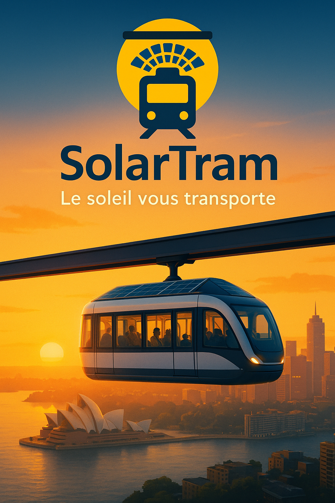Abidjan — Collier Reine Baoulé
Or 18 carats, perles ivoiriennes et pierres semi-précieuses. Prix : 18 000 – 25 000 $
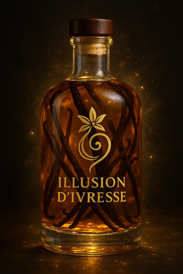Abidjan — Pagne en soie Baoulé
Textile de luxe artisanal, symbole d’élégance intemporelle. Prix : 1200 €

Abidjan — Coffret bois d’acajou & parfum
Matériau noble et rare, décliné en coffret luxe. Prix : 180–220 €
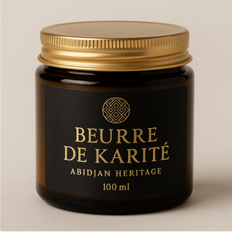Abidjan — Beurre de Karité
Pur et authentique, en pots haut de gamme. Prix : 30–60 €
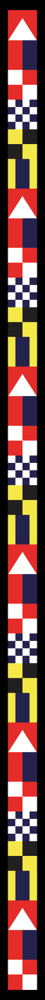Sydney — Innovation SolarTram
Tramway aérien suspendu, 100 % solaire, autonome, 24/24. Slogan : « Le soleil vous transporte »
Fonctionnalités
- Cabines autonomes pilotées par IA
- Zéro pollution, batteries intégrées
- Accessibilité universelle
- Expérience panoramique unique
Galerie
 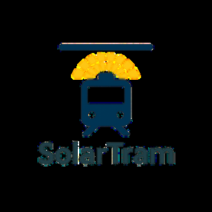
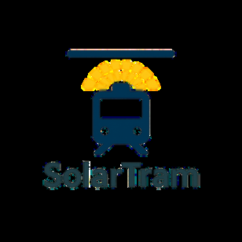
 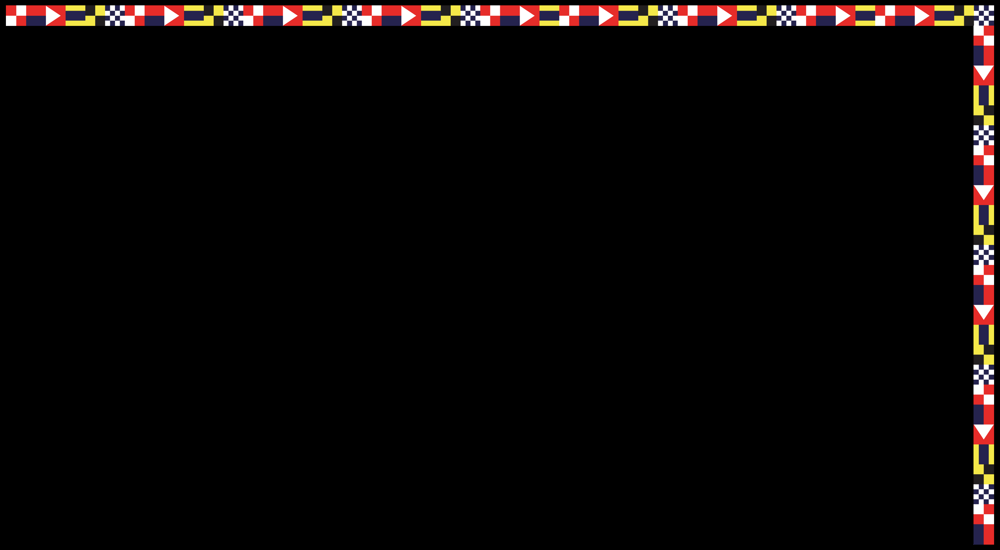
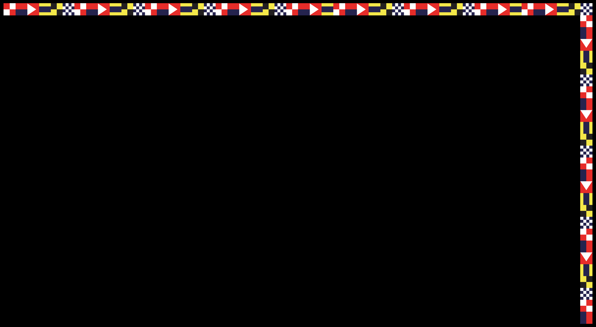
 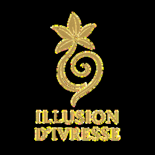
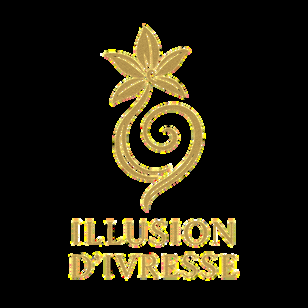

 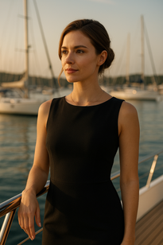
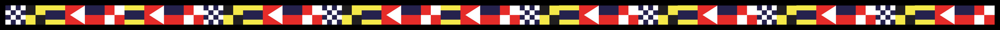
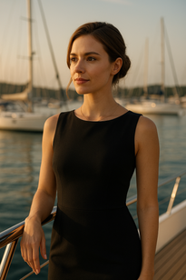
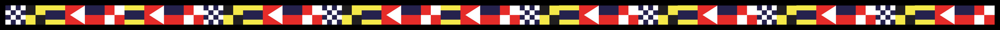


 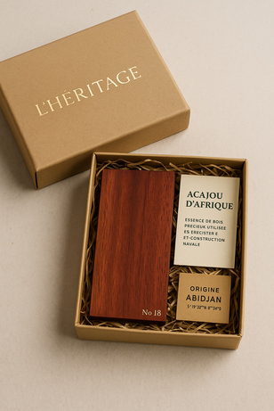
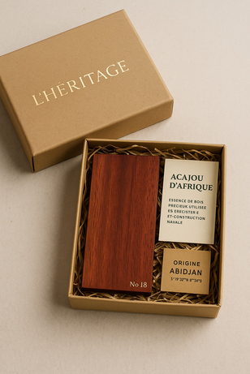
 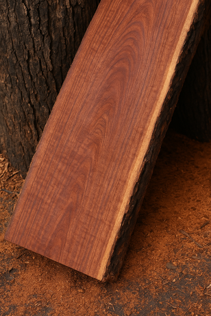
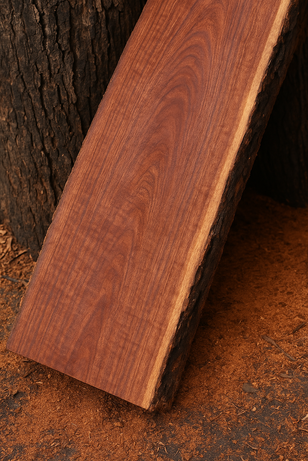


 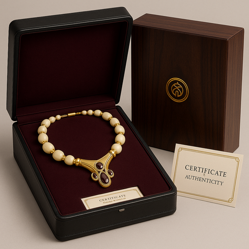
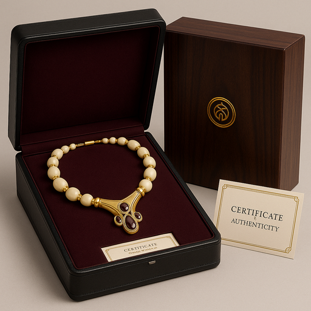


 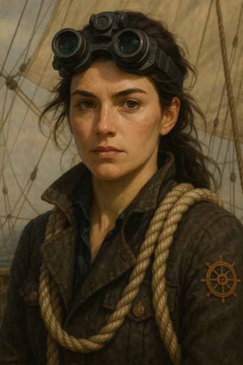
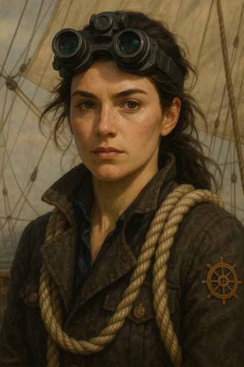
À propos
Ce site réunit la capitaine, ses voyages et les produits rares collectés. Réalisé dans le cadre du projet Golden Globe 2025.